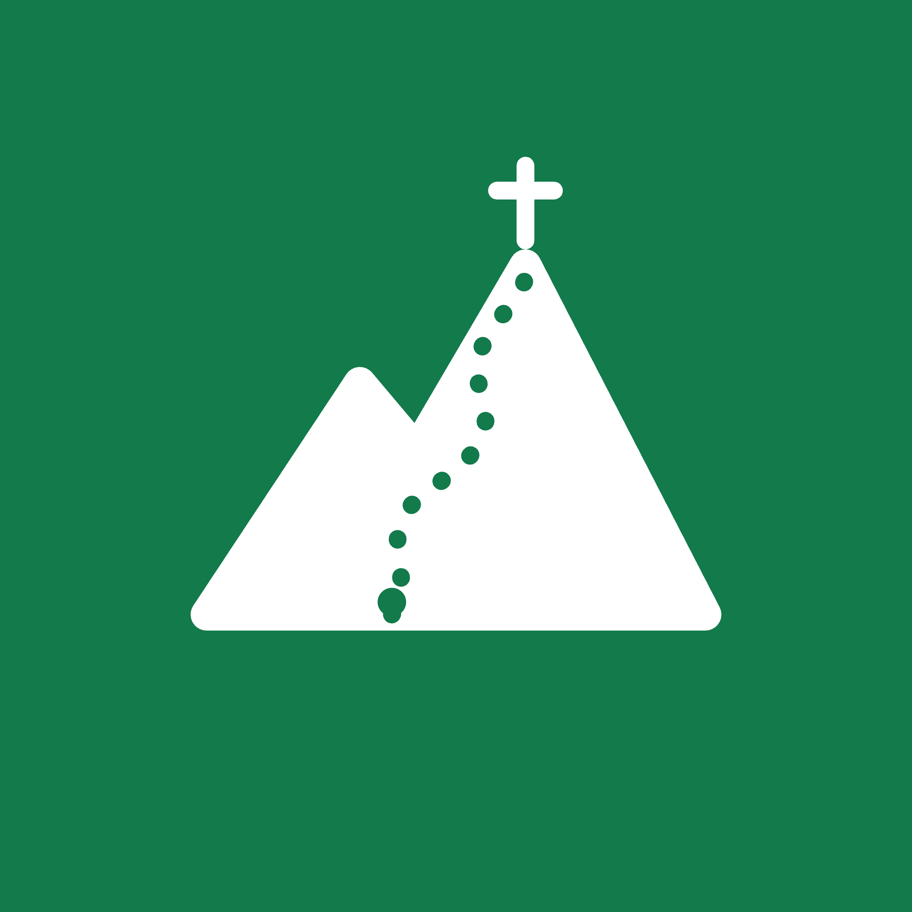

PaniaA local-first trail recorder and viewer. Record hikes with GPS, import tracks, plan routes and browse them on a map. No account, no cloud.
GPS recording that keeps going with the screen off. Choose a sampling interval from 1 to 60 seconds.
Open GPX and KML files, including Google Earth tracks, and share any trail as GPX.
Plan routes with alternatives and see a steepness profile before you set out.
OpenStreetMap-based maps with distance, duration and elevation stats for every trail.
All data is stored locally in SQLite on your device and never leaves it.
Built with Tauri, React and Rust. Source and releases are on GitHub.